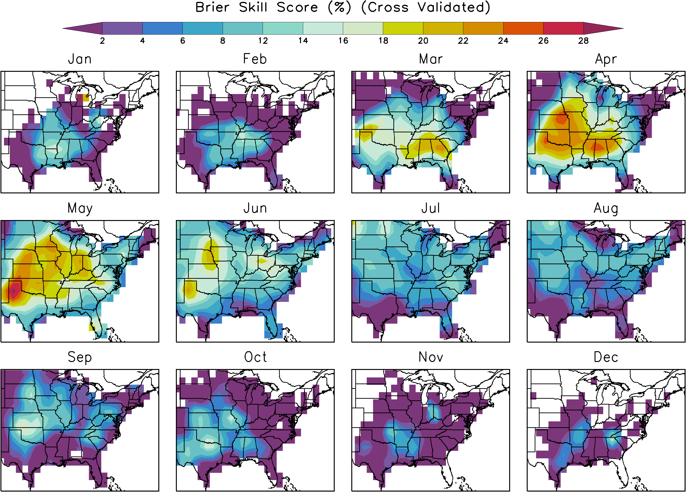
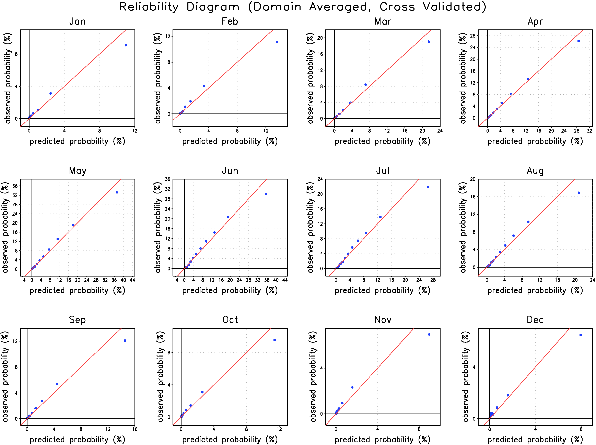

Statistically Downscaled Hail Projections
Data
The hail data is from the National Climatic Data Center's Storm Events Database and the large-scale atmospheric wind, temperature and moisture data are from the ERA-Interim Reanalysis. The hail data is "upscaled" by counting the number reports of severe hail (> 0.75 inches) within each 1.5ºx1.5º longitude/latitude grid box of the ERA interim Reanalysis.
The hail data is not stationary in time. Instead the hail reports increase exponentially in time due to changes in the National Weather Service (NWS) reporting system and due to other society related changes. A time series of the number of severe hail reports is shown below as a function of year. A large number of years of data is beneficial for fitting the statistical models. At the same time, the non-stationarity of the data is an important issue. For this study, we feel a good compromise is to fit the statistical models using the data on and after the year 1990.
Large-scale Predictors
The large-scale predictors for estimating the probability of hail within each 1.5ºx1.5º longitude/latitude grid box are calculated from the temperature, specific humidity and zonal and meridional wind from the ERA-interim Reanalysis. Severe storms are more likely to occur when the Convective Available Potential Energy (CAPE) is large. While we do find that CAPE is indeed skillful for predicting hail, we find that the lifted index, which is closely related to CAPE, performs much better. The reason is that CAPE is bounded by zero so that it cannot distinguish between states that are only slightly stable to convective motions from those that are strongly stable to convective motions. The lifted index, on the other hand, measures both the degree of instability and the degree of stability. We also find that skill improves if the rising air in the lifted index calculation is allowed to entrain air from the environment. We find that a good entrainment rate is $0.75/z$, where $z$ is the height above the ground.
Wind shear is another important ingredient for severe storms. Here we use the Bulk Shear between 500mb and 1000mb to measure wind shear.
The freezing level is an important predictor for hail because it determines whether the hail has sufficient time to melt before it reaches the ground. If the hail stones are travelling through dry air, however, then evaporation from the hail stones will cool the surrounding air and will help limit the amount of melting. To take this process into account the wet-bulb temperature is typically used in place of the temperature in the calculation of the freezing level. Rather than simply use the height where the wet-bulb temperature is zero, we consider the wet-bulb temperature along the entire path to the ground. In other words, our predictor is $\int^{z_0}_{z_g} T_w - 0^{\circ}\textrm{C} \, dz$, where $T_w$ is the wet-bulb temperature, $z_g$ is the height of the ground (i.e. elevation) and $z_0$ is the height where $T_w = 0^{\circ}\textrm{C}$.
To summarize, we use three predictors: 1) lifted index (with entrainment), 2) bulk wind shear and 3) a melting index based on wet-bulb temperature.
Methodology
For this study, we do not predict the number of hail reports but simply whether hail occurs or not. To predict such yes/no occurrence data we use logistic regression. Given some predictors and the yes/no occurrence data one wishes to predict, logistic regression gives the probability of occurrence as a function of the predictors. Here we use the three predictors listed above. The logistic regression is fit using daily data from 1990-2012. A separate fit is performed for each of the 12 months to take into account seasonal differences in the connection between the large-scale and the occurrence of hail. The fits are also applied separately to each grid point in the domain (105ºW - 66ºW, 24ºN-49ºN).
We only use the results from the logistic regression when the regression has skill on independent data. When there is no skill then we assume that each day's probability of hail is simply the climatological value. Fortunately, there is skill for all locations/months that have a significant number of hail events. To gauge skill on independent data we use cross validation: first we set aside 1 year of the 23 years of data. Next we fit the logistic regression on remaining 22 years of data. Then we test the regression fit on the year that was set aside. We then repeat so that all years have a chance to be set aside.
Cross validation is typically used to determine the number of variables that have useful skill. Typically a portion of the dataset only uses some of the available predictors because adding more do not add skill on independent data. Unfortunately, when this procedure is used, nearby grid points sometimes choose different subsets of the 3 predictors and this leads to spatial noise in the final climate change predictions. We believe that much of this variance in the predictors chosen is due to random sampling noise, therefore we use a different approach. We instead use all 3 predictors together and the cross validation determines whether 3 predictors has skill over climatology (for the standard approach we found that 32% of grid points with skill used all three predictors). To help reduce the sampling noise with 3 predictors, we also impose a sign constraint on the regression coefficients based on the expected physical connection between each of our 3 predictors and hail. Sign constrained regression has been found to be an effective regularization technique in certain cases (Slawski and Hein 2013 and Meinshausen 2013).
Skill
To gauge the skill of our downscaling methodology we show the Brier Skill Score and Reliability Diagrams. The Brier Skill Score is shown on a map and is given as a percentage. The Reliability Diagram is averaged over the entire spatial domain to reduce noise. All statistics are cross-validated. In other words, the logistic regression has not "seen" the data that is used for validating the regression and so these tests measure the true skill on independent data.
 Climate Models
After determining the relationship between the large-scale atmospheric state and hail in observations, we apply this relationship to the climate models to estimate hail given the large-scale from the climate models. The climate models are from the CMIP3 archive, a critical source of data to the Fourth Assessment Report of the Intergovernmental Panel on Climate Change (IPCC AR4). There are 13 models with enough daily data for us to downscale:
| Originating Group(s) | Country | CMIP3 I.D. |
|---|---|---|
| Canadian Centre for Climate Modelling & Analysis | Canada | CGCM3.1(T47) |
| Canadian Centre for Climate Modelling & Analysis | Canada | CGCM3.1(T63) |
| Meteo-France / Centre National de Recherches Meteorologiques | France | CNRM-CM3 |
| CSIRO Atmospheric Research | Australia | CSIRO-Mk3.0 |
| CSIRO Atmospheric Research | Australia | CSIRO-Mk3.5 |
| US Dept. of Commerce / NOAA / Geophysical Fluid Dynamics Laboratory | USA | GFDL-CM2.0 |
| NASA / Goddard Institute for Space Studies | USA | GISS-AOM |
| NASA / Goddard Institute for Space Studies | USA | GISS-ER |
| LASG / Institute of Atmospheric Physics | China | FGOALS-g1.0 |
| Center for Climate System Research (The University of Tokyo), National Institute for Environmental Studies, and Frontier Research Center for Global Change (JAMSTEC) | Japan | MIROC3.2(hires) |
| Meteorological Institute of the University of Bonn, Meteorological Research Institute of KMA, and Model and Data group | Germany / Korea | ECHO-G |
| Max Planck Institute for Meteorology | Germany | ECHAM5/MPI-OM |
| Meteorological Research Institute | Japan | MRI-CGCM2.3.2 |
Daily data from the CMIP3 models is only available for the following time periods: 1961-2000, 2046-2065 and 2081-2100. Therefore our downscaling is unfortunately also constrained to lie within these time periods.
The CMIP3 climate models are de-biased using the "CDF remapping" of Wood et al 2002 with a very minor modification to enhance the robustness at the tails of the distribution. They are "de-biased" to look like the ERA-interim Reanalysis, because our statistical models were "trained" using the large-scale from the ERA-interim Reanalysis.